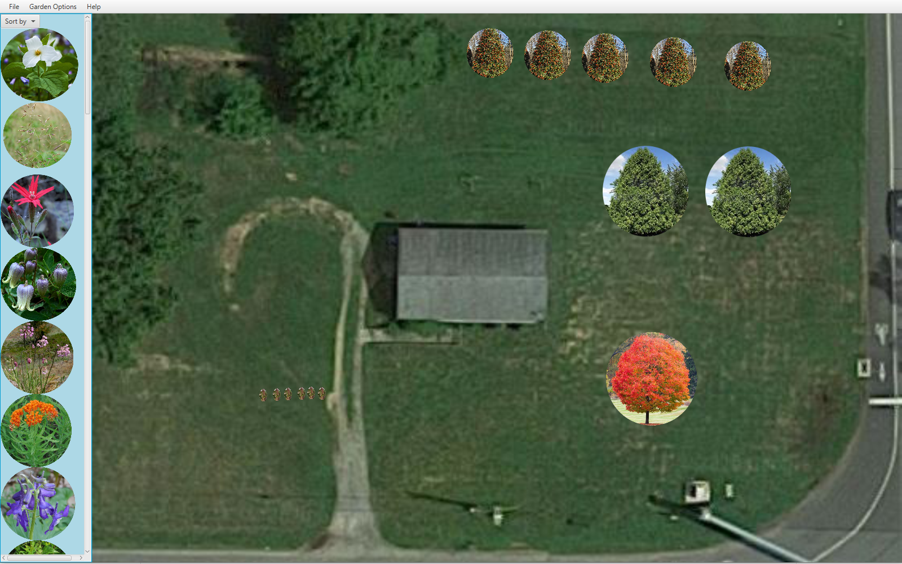

Projects:
Blue Hen Meal Search:
Using a webscraper based in Python we were able to create a site in Javascript that allowed users to search the University of Delaware dining halls for their favorite meals.

My Garden Designer:
A gardening application that puts emphasis on growing native plants. Made in Java using the Javafx library. Features included drag-and-drop, photo uploads and save-and-load.
stocks4me:
Simple, clean stock application that allows a user to plan out a stock portfolio. The user is able to modify a chart that displays their stock information. Includes a custom news feed that feeds information about the stocks in their portfolio, so they can keep up with the companies that they invest in.

Unix-like Shell:
Built a Unix-like shell in C. Has built-in commands inspired by their Unix counterparts. The shell was able to execute external commands. The shell also had built-in piping!
Gore Projects:
Projects I worked on at Gore belong to Gore, so I can not go into details. Languages used include Javascript and Arduino (which is C-like).